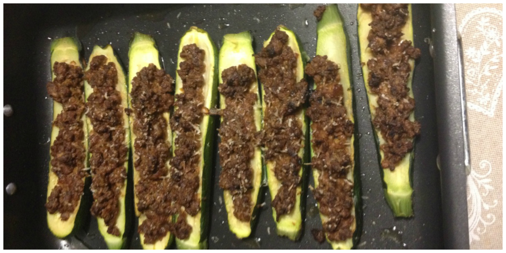
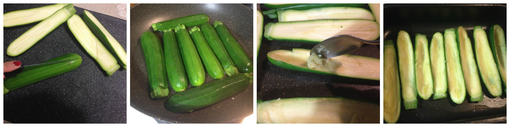
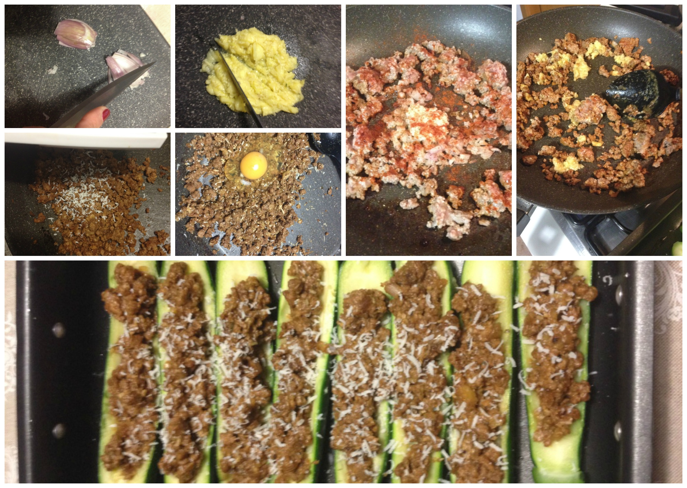

Stuffed zucchini¶

- Serves: 4
- Type: main
Background¶
This is one of my mom’s recipes. I learnt to prepare it when I was a teenager and I cooked from time to time and sometimes I like to vary it with different ingredients (for example: adding some diced gouda cheese, white sauce, etc) and it is really tasty and help you to come out with a nice meal.
Ingredients¶
- 4 medium zucchini
- 1 egg
- 1 shallot
- 2 garlic cloves (or garlic paste)
- 500 grams minced meat (I prefer beef)
- 1 teaspoon grounded cumin
- 1 tablespoon paprika powder
- Salt and pepper to taste
- Butter
- Olive oil
- 1 tablespoon dried parsley
- 50 grams parmesan cheese
- 1 tablespoon Worcester sauce
Steps¶
Cut the zucchini vertically in half
Steam the zucchini. Remove carefully the seeds, leaving some space in the top and bottom of the zucchini.
Place the zucchini on a greased oven dish, with the zucchini skin down.
Preparing the zucchini
Dice the shallots, the garlic and the steam cooked zucchini seeds
Heat some oil in a fry pan, sauté the diced shallots and garlic
Add the minced meat, the paprika, salt and pepper and stir fry
Add the seeds and stir fry for a few minutes. Add the egg
Add some grated parmesan cheese (if you want you can also add some bread crumbs)
Fill the zucchini
Sprinkle some grated parmesan cheese and put on some butter on
Bake it at 180°C for 15 minutes or au gratin (when the parmesan cheese will be melted and brown). Serve warm
Preparing the stuffing